Nmap
realizamos un escaneo con nmap y encontramos estos puertos abiertos
doge come pone

fuzzing
accedemos a la web, Nada en los puertos 80, 8000

encontramos el subdominio TeamCity.runner.htb lo agregaremos al /etc/hosts
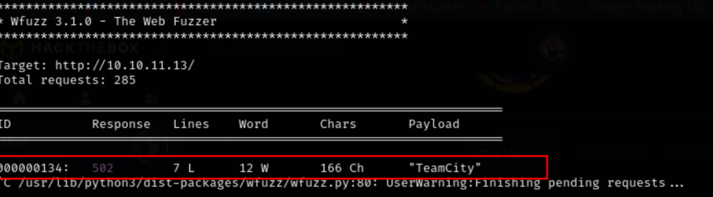esa es una página de inicio de sesión. Entonces, intenté buscar las credenciales predeterminadas, pero no tuvimos éxito
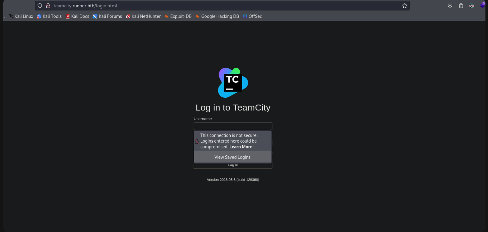exploit
obtuve un exploit para la versión 2023.11.4 de TeamCity. TeamCity Admin Account Creation CVE-2024-27198

usamos el exploit de la siguiente manera
|
|

consguimos estas credenciales

vamos al panel de login anteriormente descubierto y iniciamos sesion con las crendenciales que conseguimos
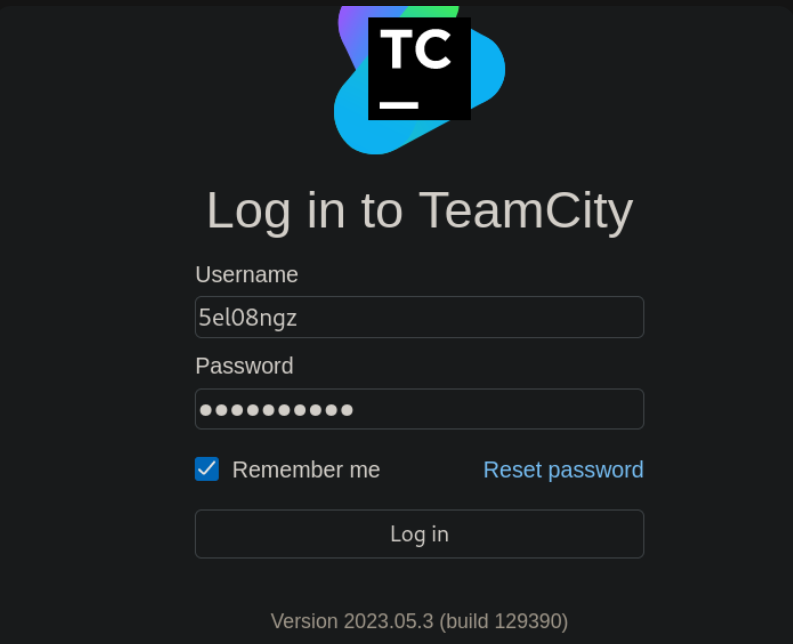nos moveremos a backup y descargaremos el .zip

id_rsa
En la enumeración, encontramos que hay id_rsa archivo en la carpeta de copia de seguridad.
 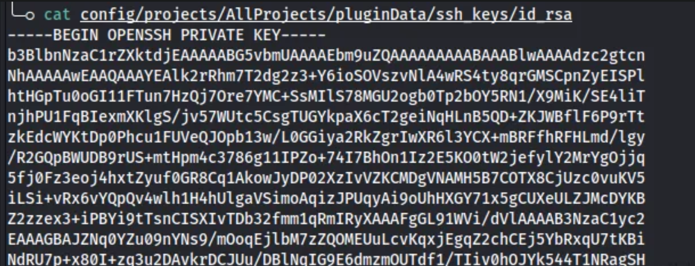
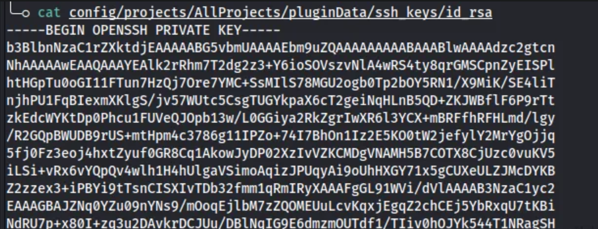
usuarios
También encontramos usuarios y hashes en la misma carpeta.

solo se descifra el hash de Methew
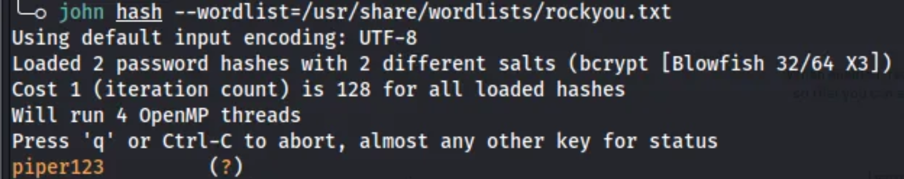Hasta ahora tenemos un archivo id_rsa, dos usuarios (Methew, jhon), contraseña para Methew.
ssh
Con id_rsa archivo podemos iniciar sesión con éxito como JHON. Hench obtuvo el acceso inicial
 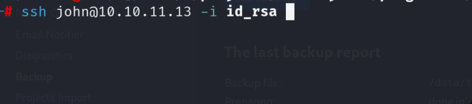
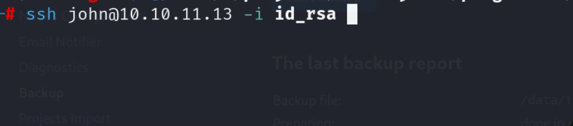
conseguimos la flag de user

Al visitar http://127.0.0.1:9000 hay una página de inicio de sesión. En el que podemos iniciar sesión con la contraseña de usuario de Methews
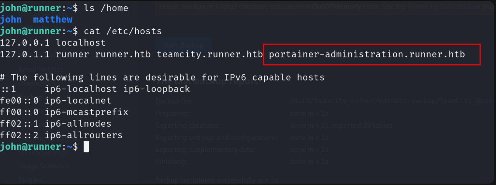portainer
Nota: Portainer es un software de gestión de contenedores para implementar, solucionar problemas y proteger aplicaciones en casos de uso de nube, centros de datos e IoT industrial.
usaremos las credenciales previamente conseguidas
|
|
exploit
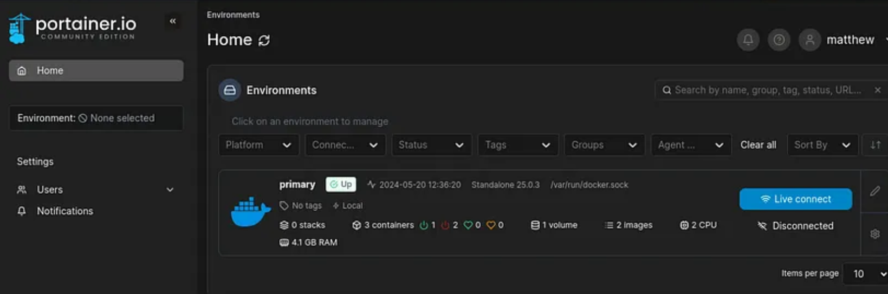También hay 2 imágenes de Docker -[ubuntu:latest, teamcity:latest]
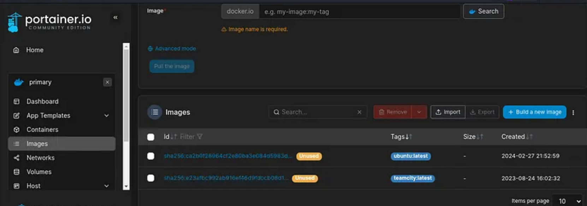Según esta publicación, tenemos que crear un directorio de trabajo de contenedor para esta ruta → /proc/self/fd/8
contenedor
Ahora cree un contenedor usando teamcity:latest.
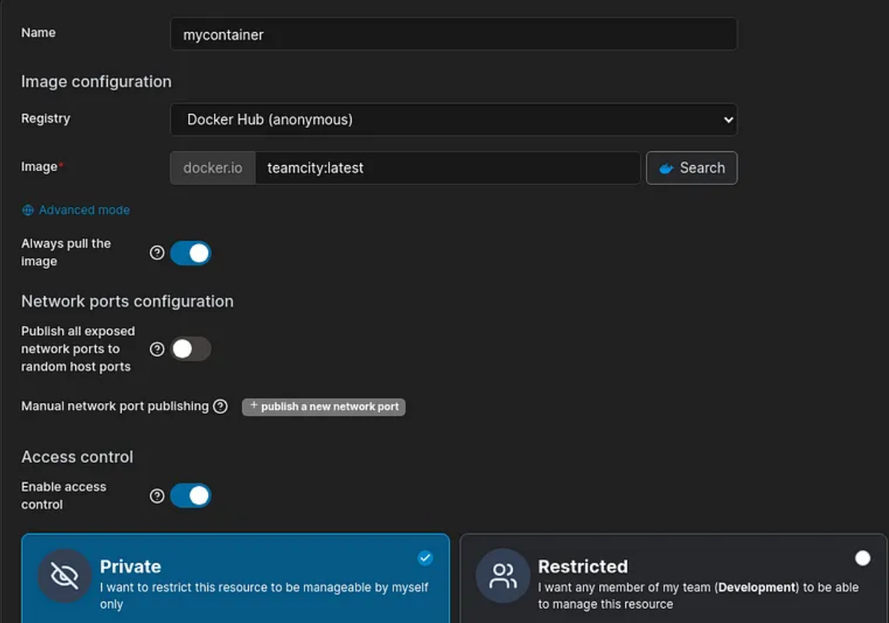 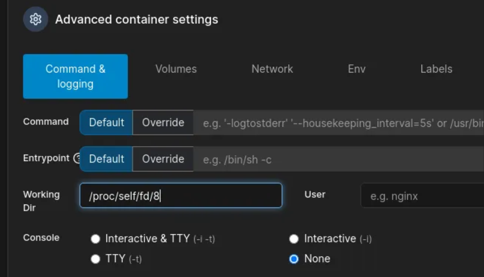 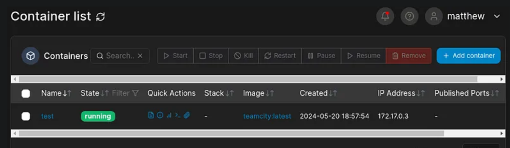consola
Como usuario root, obtenga acceso a la consola
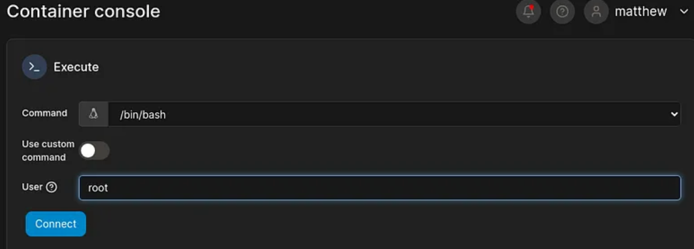root
|
|